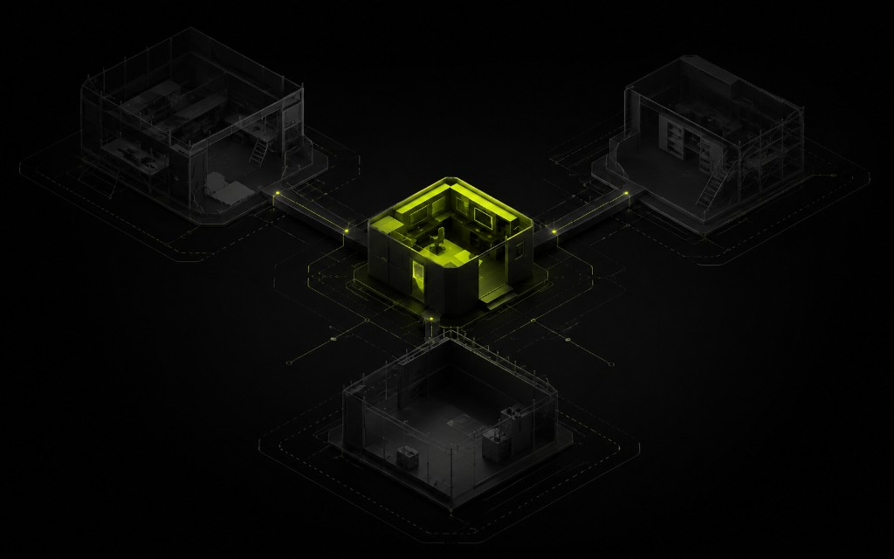

MVP — не половина большой системы
MVP — сценарий, за который клиент готов платить или которым команда реально пользуется каждый день. Обычно это одно действие: оставить заявку, оформить заказ, увидеть статус. Всё «на будущее» уходит в бэклог.
Если в первый спринт входят и каталог, и личный кабинет, и сложная аналитика — это уже не MVP. Это сжатый «большой продукт», который сорвёт сроки.

Как резать scope без вреда
- Один главный сценарий пользователя — и только вокруг него UI.
- Интеграции: минимум для сигнала (Telegram/почта), остальное после живых данных.
- Админка: достаточно править контент вручную первые две недели.
- Дизайн-система: токены и сетка, без бесконечных вариаций карточек.
Срок 4–6 недель — когда реалистичен
Когда цель ясная, контент готов вовремя, решений меньше десяти. И когда команда не переписывает бриф каждую неделю. Иначе срок плавает, а бюджет уходит на обсуждения.